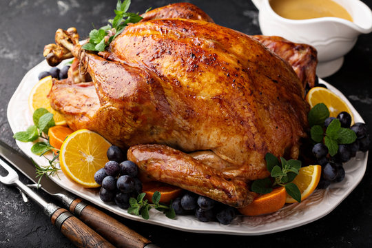

Roasted Turkey

Description
A roast turkey that is crisp-skinned, juicy, and evenly cooked, with no flipping, trussing, or fussing.
Ingredients
- 2 tablespoons kosher salt
- 1 tablespoon ground black pepper
- 1 tablespoon poultry seasoning
- 1 (12 pound) whole turkey, neck and giblets reserved
- 2 onions, coarsely chopped
- 3 ribs celery, coarsely chopped
- 2 carrots, coarsely chopped
- 3 sprigs fresh rosemary
- ½ bunch fresh sage
- ½ cup butter
- 1 bay leaf
- 6 cups water
- 2 tablespoons turkey fat
- 1 tablespoon butter
- ¼ cup all-purpose flour
- 3 cups turkey pan drippings
- ¼ teaspoon balsamic vinegar (Optional)
- 1 tablespoon chopped fresh sage
- salt and ground black pepper to taste
Instructions
- Preheat oven to 325 degrees F (165 degrees C).
- Mix 2 tablespoons salt, and 1 tablespoon pepper, and poultry seasoning in a small bowl. Tuck turkey wings under the bird, and season cavity with about 1 tablespoon of the poultry seasoning mixture. Reserve remaining poultry seasoning mix.
- Toss the onion, celery, and carrots together in a bowl. Stuff about 1/2 cup of the vegetable mixture, rosemary sprigs, and 1/2 bunch sage into the cavity of the turkey. Tie legs together with kitchen string. Loosen the skin on top of the turkey breast using fingers or a small spatula. Place about 2 tablespoons butter under the skin and spread evenly. Spread the remaining butter (about 2 tablespoons) all over the outside of the skin. Sprinkle the outside of the turkey with the remaining poultry seasoning mix.
- Spread the remaining onion, celery, and carrots into a large roasting pan. Place the turkey on top of the vegetables. Fill the pan with about 1/2 inch of water. Arrange a sheet of aluminum foil over the breast of the turkey.
- Roast the turkey in the preheated oven until no longer pink at the bone and the juices run clear, about 3 1/2 hours. An instant-read thermometer inserted into the thickest part of the thigh, near the bone should read 165 degrees F (75 degrees C). Remove the foil during the last hour of cooking. Baste the turkey with the pan juices.
- While the turkey is roasting, make stock: place neck, heart, and gizzards in a saucepan with the bay leaf and water. Simmer over medium heat for 2 hours. Strain the turkey giblets from the stock, and discard giblets. There should be at least 4 cups of stock.
- Remove the turkey from the oven, cover with a doubled sheet of aluminum foil, and allow to rest in a warm area for 10 to 15 minutes before slicing. Pour the pan juices, about 3 cups, into a saucepan and set aside. Skim off the turkey fat from the pan juices, reserving about 2 tablespoons.
- Heat 2 tablespoons of the turkey fat and 1 tablespoon butter in a saucepan over medium heat. Transfer the onion from the roasting pan into the skillet. Cook and stir until the onion is browned, about 5 minutes, then stir in the flour. Continue to cook and stir for about 5 minutes more; whisk in 4 cups of the skimmed turkey stock and the reserved pan juices until smooth; skim off any foam. Stir in the balsamic vinegar. Simmer until the gravy is thickened, whisking constantly, about 10 minutes. Stir in 1 tablespoon of chopped sage, and season to taste with salt and black pepper.